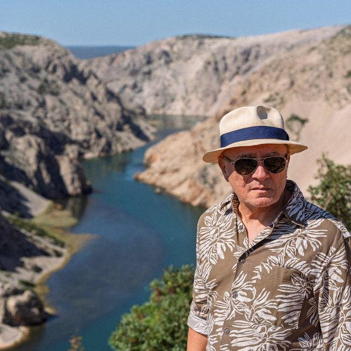

Dušan Milojević
Wir verfügen über eigene, moderne Fahrzeuge und vermitteln darüber hinaus Fahrer sowie weitere Busse – für Reisen innerhalb Österreichs ebenso wie ins Ausland. Unsere Fahrzeuge bieten Platz für 20 bis 59 Fahrgäste und Komfort für jede Strecke – ob Tagesausflug, Klassenfahrt oder Fernreise.
Für Anfragen, Buchungen und Informationen erreichen Sie uns unter:
E-Mailinfo@dusanmilojevic.com
Telefon+43 664 73457038